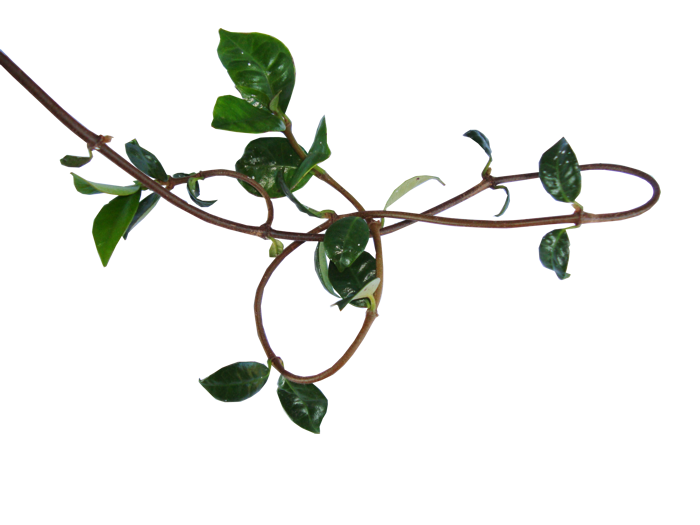
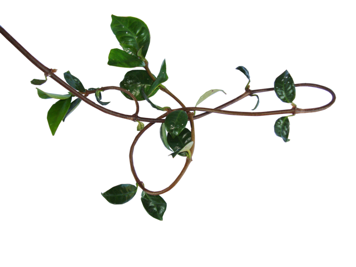

Root & Vine
About the Site Root & Vine is a passion project which started as a way to have easy access to all of the information needed to care for a growing jungle of plants right at my fingertips.
It was bourne out of suggestion and necessity: As a student project for a Web class that incentivized me to create a page that I would find myself using. That other people might also find value in.
Houseplants are one of my favourite hobbies, something I fell into when I moved to the desert and wanted to find a way to bring nature back into my home. Greenery.
About the Plants
What began with only rudimentary listings of plants that I owned, it quickly branched into plants that I want to invest in and own in the future. On this site are an assortment of plants ranging from beginner friendly to the most dramatic of plants that will perish without notice
Here you can also find variations of plants that are sometimes fantastic and much more expensive than their normal counterparts. In this way you can diversify your collection and improve your home decor.
About the Curator
An eccentric person who loves plants and animals alike and misses the nature of the Pacific Northwest so sought to bring it into their home and then grew that hobby into an obsession. I've used this website as my personal compendium of plants in order to help me thoroughly keep track of and collect the plants and varieties I seek to keep in my home.
Generally open to correspondence you can reach me through the Contact Us section with any planty questions or concerns and I am also open to suggestions of what might be better curated for the site at large, or any varieties of plants that I may have missed.
About the Site Root & Vine is a passion project which started as a way to have easy access to all of the information needed to care for a growing jungle of plants right at my fingertips.
It was bourne out of suggestion and necessity: As a student project for a Web class that incentivized me to create a page that I would find myself using. That other people might also find value in.
Houseplants are one of my favourite hobbies, something I fell into when I moved to the desert and wanted to find a way to bring nature back into my home. Greenery.
About the PlantsWhat began with only rudimentary listings of plants that I owned, it quickly branched into plants that I want to invest in and own in the future. On this site are an assortment of plants ranging from beginner friendly to the most dramatic of plants that will perish without notice
Here you can also find variations of plants that are sometimes fantastic and much more expensive than their normal counterparts. In this way you can diversify your collection and improve your home decor.
About the CuratorAn eccentric person who loves plants and animals alike and misses the nature of the Pacific Northwest so sought to bring it into their home and then grew that hobby into an obsession. I've used this website as my personal compendium of plants in order to help me thoroughly keep track of and collect the plants and varieties I seek to keep in my home.
Generally open to correspondence you can reach me through the Contact Us section with any planty questions or concerns and I am also open to suggestions of what might be better curated for the site at large, or any varieties of plants that I may have missed.